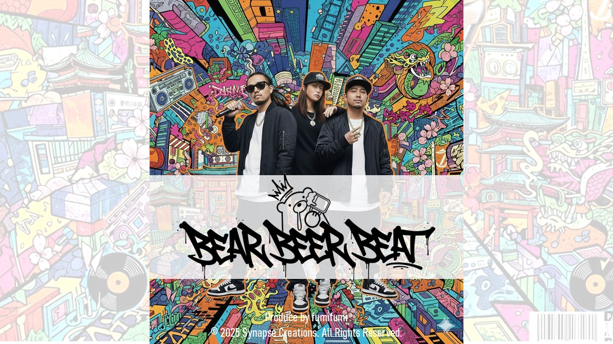
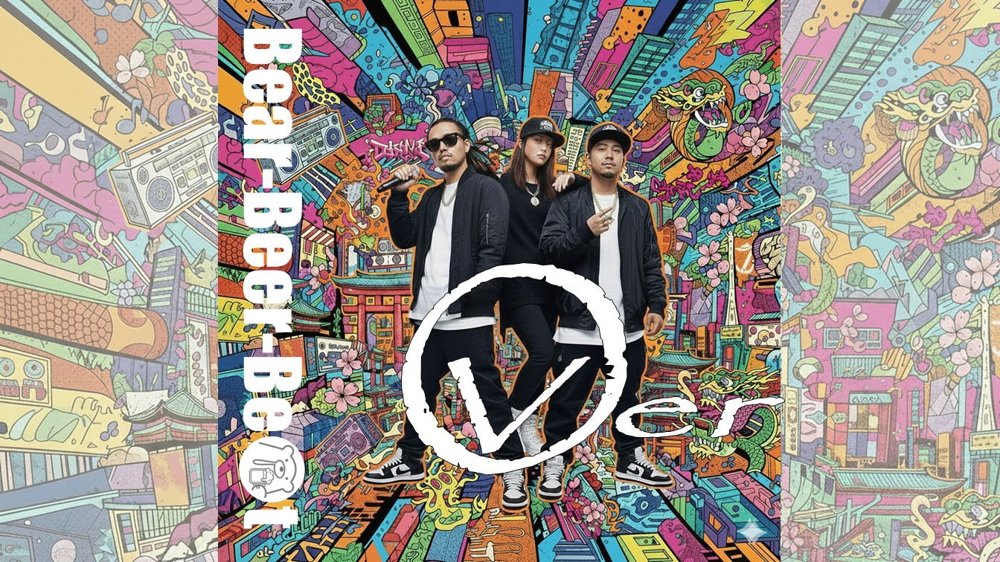
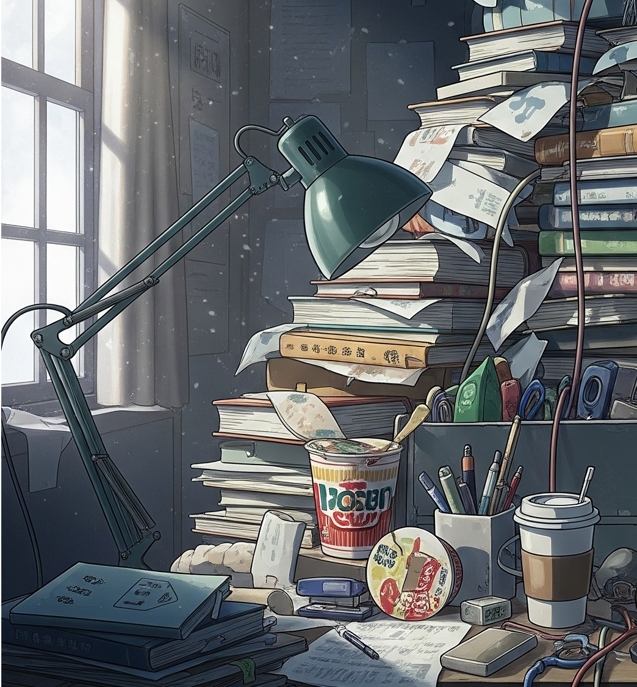

All Music

BEAR BEER BEAT
プロデューサー/コンポーザーのfumifumi、AIリリシスト兼ラッパーのKUMA、そしてAIビートメイカーのNAMAから成る3人組のハイブリッド音楽ユニット。
彼らの制作スタイルは独特で、まずfumifumiが楽曲のコンセプトを設計。その指示に基づき、KUMAが膨大なテキストデータから感情豊かなリリックを生成し、NAMAが予測不可能なビートとメロディを構築する。最終的にfumifumiがそれらを再構築し、一つの楽曲として完成させる。
人間の感性とAIの偶発性が交差することで生まれる、誰も聴いたことのないサウンドが彼らの真骨頂だ。
View Full Profile下のリストから聴きたい曲を選んでください。
ありのままで2
SUNOのVer4.5でリミックス
全く違う性能が分かるよ
ありのままで
あなたらしく！SUNOのVer3
あなたのそばに、そっと寄り添う曲
Where the Wind Goes2
SUNOのVer4.5でリミックス
これも違いを比べてみて！
Where the Wind Goes
風の行方。なぐさめラップ
傷と想いが交差するエモラップ。

over
ひたすらまくしたてラップ
SUNO-Ver4.5
Corporate slave Beat
働いて！働いて！働いて！
働け！ SUNO-Ver4.5

灯-Tomoshibi
次の日、次へ行くため
エールをラップに

Stuck but Breathing
立ち止まっても、、、
それでも前へ
No Words, Just Work
言葉は要らない
ただ仕事をするだけひたすら叫ぶラップ